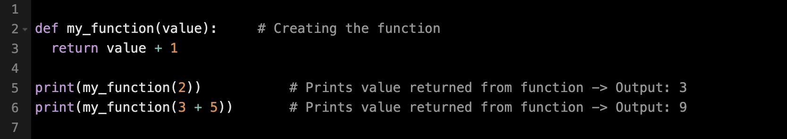
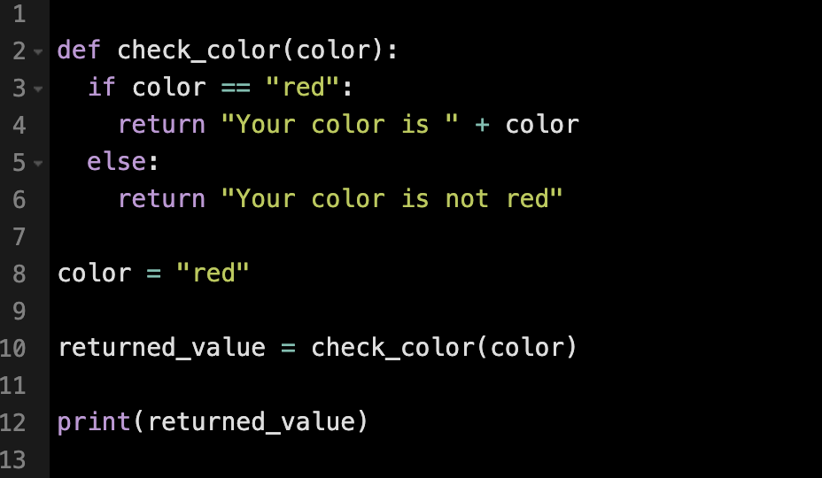

Some tasks need to be performed multiple times within a program. Rather than rewrite the same code in multiple places,
a function may be defined using the def keyword. Function definitions may include parameters, providing data input to the function.
Basic function syntax
Functions can return a value using the return keyword followed by the desired value. This allows the function to be called and its result to be used elsewhere in the program.
The return keyword in Python is used to send a value back from a function. The returned value can be assigned to a variable and used elsewhere in the program.
In the example below, the check_color function returns a string that indicates if the passed parameter is red or not.
Output: Your color is red
Parameters are variables defined in a function's declaration. They are used within the function body to process data and generate
a result. When the function is called, each parameter receives a value from the corresponding argument provided.
Output: Your name is george and you are 22 years old.
If the number of arguments passed to a function is unknown, a * can be added before the parameter name in the function definition.
This allows the function to accept multiple arguments as a tuple, enabling access to individual items as needed.
Output: The youngest child is Linus